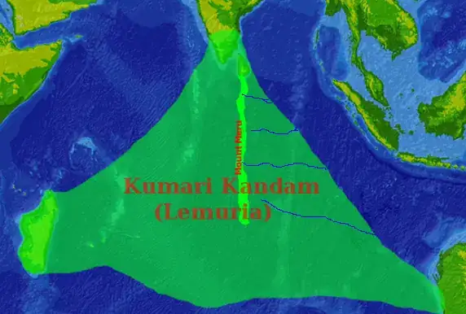

The tradition
Kumari Kandam appears in Tamil literary tradition as a land in the far south, associated with the Pandya kingdom and with a deluge. In the late nineteenth and early twentieth centuries it was connected to Lemuria, a hypothetical land bridge proposed by zoologists to explain the distribution of lemurs, and the combined idea became a Tamil nationalist and later a fringe historical claim.
Maps, diagrams and images


The geology
Lemuria was abandoned once plate tectonics explained the distributions. The Indian Ocean has been mapped in detail, and there is no submerged continental mass in the position required; the features that exist — the Ninety East Ridge, the Kerguelen Plateau — are volcanic and not a lost civilisation's homeland.
The literary tradition is genuine and worth studying; the geological claim attached to it is not supported.
Documented: the literary tradition and its modern use.
Documented: the abandonment of Lemuria.
Not found: any submerged continent.
Not supported: the geological claim.
The honest label: fringe.
Why it is in the archive
Because it is the clearest case of a colonial-era scientific hypothesis being adopted by a nationalist tradition, and then outliving the science.
Open resources on this topic
- BookThe king of Kumari Kandam — Trimble, Irene · 2009 (Internet Archive, free to read)
- BookAVR SWARNAMAHAL( KUMARI KANDAM COLLECTION 2.0) — Central Board of Film Certification (CBFC), India (Internet Archive, free to read)
- BookAVR SWARNA MAHAL JEWELLERS (KUMARI KANDAM) — Central Board of Film Certification (CBFC), India (Internet Archive, free to read)
- PapersOpen-access articles: DOAJ · PubMed Central · Internet Archive Scholar
- BooksPublic-domain and borrowable copies: Open Library · Project Gutenberg · Google Books
More images
Cite this page
Momin, S. (2026). Kumari Kandam. The Larger World Archive. https://drsamonline.github.io/LARGE_GLOBE/kumari-kandam.htmlMomin, Sohil. “Kumari Kandam.” The Larger World Archive, 2026, https://drsamonline.github.io/LARGE_GLOBE/kumari-kandam.html.Momin, Sohil. “Kumari Kandam.” The Larger World Archive, 2026. https://drsamonline.github.io/LARGE_GLOBE/kumari-kandam.html.@misc{kumari2026kumari,
author = {Momin, Sohil},
title = {Kumari Kandam},
year = {2026},
howpublished = {The Larger World Archive},
url = {https://drsamonline.github.io/LARGE_GLOBE/kumari-kandam.html},
note = {Last reviewed 20 November 2026}
}Last reviewed 20 November 2026 · Corrections policy · this page is not peer reviewed
Sources for this page
- Wikipedia, “Kumari Kandam” — the tradition and the claimsen.wikipedia.org
- Wikipedia, “Lemuria” — the discarded hypothesisen.wikipedia.org
- Wikipedia, “Plate tectonics” — the replacementen.wikipedia.org
- Wikipedia, “Indian Ocean” — the basinen.wikipedia.org